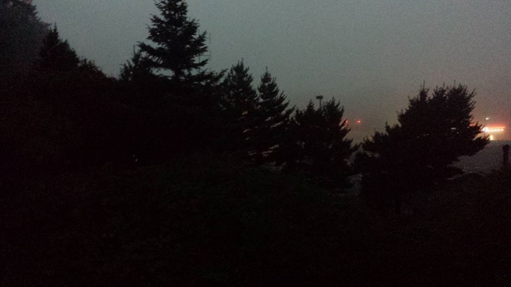

Ope...A Life
-12
Small write up on the 2017 eclipse from a previous iteration of this journal. Rather than integrate it into the current journal, I'm putting it here. I like it too much to leave it out but am too lazy to integrate it properly, so here it lays.
#pnw
The 2017 eclipse was an experience! It started off as a foggy day so we weren't sure we'd be able to view it at all. The umbra was supposed to hit the North American Continent first near Depoe Bay, which is only about a fifteen minute drive away. We were going to have totality. As we sat on the back deck the fog began to clear above us with about thirty minutes to spare, though at this point visibility was only about one hundred feet horizontally. We could see the sun.
It was eerily quiet. The fog around us was either absorbing the sound of other people around us or there was no one around us waiting to experience it.
With just a minute before totality I noticed it get a little darker but nothing too impressive. Totality hit and it went dark as night and, much to our surprise, a roar of awe rose from all around us. We weren't alone to see it, we were surrounded by scores of people. The combination of going from light to total darkness, and complete quiet to a roar, this great primal vocalization of people around us caused the hair on the back of my neck to rise.

